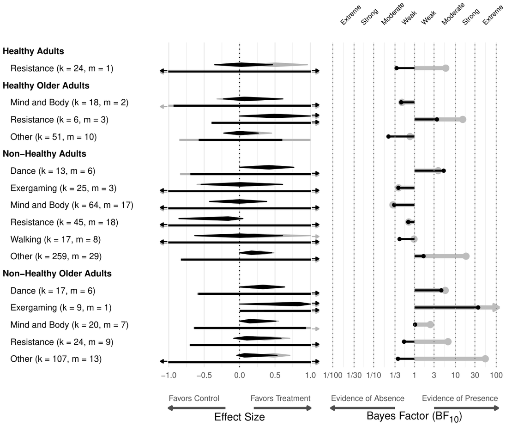

Abstract
Background: Physical exercise is widely promoted for cognitive enhancement, yet prior syntheses have been questioned due to methodological limitations.
Objectives: This study evaluated the reliability of evidence supporting physical exercise for general cognition, memory, and executive function, and assessed efficacy across specific population-intervention combinations after adjusting for publication bias.
Methods: This study is a study-level meta-meta-analysis of randomized controlled trials (RCTs). We included systematic reviews with meta-analyses of RCTs evaluating exercise interventions against non-exercise controls in humans, identified in a meta-meta-analysis published in 2025. We extracted study-level effect sizes and synthesized the data using robust Bayesian meta-analysis which allowed us to evaluate evidence for and against the presence of the effect, between-study heterogeneity, publication bias, while accounting for model uncertainty.
Results: We extracted 2,239 study-level effect estimates from 215 meta-analyses. After excluding suspected duplicates, 1,933 estimates from 201 meta-analyses were included in the overall analyses, which revealed extreme evidence of publication bias and between-study heterogeneity. Adjusted average effects were significantly smaller than unadjusted estimates for general cognition (SMD=0.208; 95% credible interval (CrI) [0.075, 0.318]), and executive functions (SMD=0.088, 95%CrI [0.000, 0.168]). For memory the adjustment differed between adjustment specifications (SMD=0.226, 95%CrI [0.169, 0.282] vs SMD=0.021, 95%CrI [0.000, 0.217]). While broad prediction intervals spanned substantial negative and positive effects, subgroup analyses identified mostly consistent benefits for specific combinations, such as dance and exergaming for general cognition in non-healthy older adults.
Conclusion: The primary limitations of the evidence are severe publication bias and extreme heterogeneity, which appear to inflate previously reported benefits. Consequently, broad claims of generalized cognitive enhancement from physical exercise appear premature. The results support a shift from blanket public health advice to recommendations tailored to specific population-intervention combinations.

Reference: Frantisek Bartos, Martina Luskova, Kseniya Bortnikova, Karolina Hozova, Klara Kantova, Zuzana Irsova, Tomas Havranek (2025), "Effect of Exercise on Cognition, Memory, and Executive Function: A Study-Level Meta-Meta-Analysis Across Populations and Exercise Categories," available at osf.io/preprints/psyarxiv/qr8e2_v2.
Headline result
Effect of physical exercise on cognition: corrected for publication bias, SMD 0.208 for general cognition and 0.088 for executive function; for memory 0.226 or 0.021, depending on the adjustment (wide prediction intervals spanning negative and positive effects), based on 1,933 effect-size estimates from 201 meta-analyses (Bartos et al. 2025).
How to cite
Frantisek Bartos, Martina Luskova, Kseniya Bortnikova, Karolina Hozova, Klara Kantova, Zuzana Irsova, Tomas Havranek (2025), "Effect of Exercise on Cognition, Memory, and Executive Function: A Study-Level Meta-Meta-Analysis Across Populations and Exercise Categories," available at osf.io/preprints/psyarxiv/qr8e2_v2.
BibTeX
@misc{bartos2025exercise,
author = {Frantisek Bartos and Martina Luskova and Kseniya Bortnikova and Karolina Hozova and Klara Kantova and Zuzana Irsova and Tomas Havranek},
title = {Effect of Exercise on Cognition, Memory, and Executive Function: A Study-Level Meta-Meta-Analysis Across Populations and Exercise Categories},
year = {2025},
doi = {10.31234/osf.io/qr8e2_v2},
}